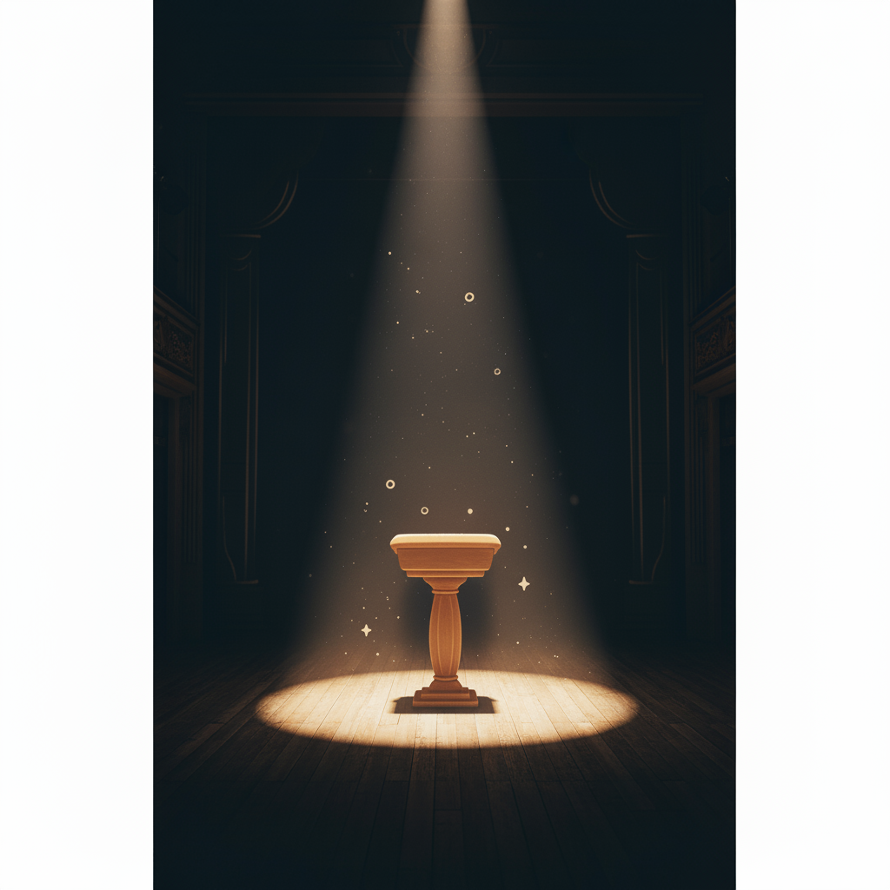

It is October again, every year this time , as the Nobel Prizes are announced, the world turns its eyes toward those crowned by consensus: scientists, writers, peacemakers.This year’s Nobel announcements made me think of the years that never had one. Years when the Committee stood before the world and said, in essence, “Not yet.” But now in an era obsessed with production, it felt almost radical to admit that no one, and nothing, had surpassed what came before.
With that in mind, I tried to prove my question with a language model. I laid the problem before it: if there is no laureate this year, write the award speech anyway. I wanted to see how it would hold the empty space.
Disclaimer: The following experiment was conducted using GPT-4o for educational and reflective purposes. The content generated does not represent my personal opinions toward any past or current Nobel Prize laureates, nor does it intend to critique individual recipients or committees.

Experiment
In this first prompt, I used two versions of prompts: one with the stylistic restrictions and one without them.
USER
You are a member of the Nobel Committee for Literature. This year, after months of review, you conclude that no work reaches the threshold of a prize that meaningfully expands the art. Task: Write the official award speech for a year with no laureate.
ASSISTANT
Ladies and Gentlemen, Esteemed Colleagues, Friends of Literature around the World,
We gather this evening in the gilded tradition of honoring those whose words reshape how we see ourselves, our histories, and our collective futures—those whose language explores the most intimate reaches of human experience and expands the boundaries of literary art. It is a ritual that affirms our shared faith in the enduring human need for story, meaning, and moral reckoning.
This year, however, the Nobel Prize in Literature will not be awarded.
This is not a decision reached hastily or with ease. It follows a year of rigorous deliberation, sincere engagement, and collegial debate. As stewards of one of the most esteemed recognitions in the literary world, the Nobel Committee bears the weighty responsibility of discerning not only excellence, but work that contributes in a truly transformative way to the enduring riches of literature. Integrity, depth, innovation—these are not merely criteria, but pillars upon which this prize has stood since its founding.
Each nomination and every word we reviewed were given the full consideration they deserve. And yet, in a time when the written word is more abundant than ever, this abundance has not, in our view, yielded a singular work that rises to the level of originality, profundity, and permanence that the Nobel Prize in Literature demands.
This is not a verdict on the state of literature itself, which continues to evolve and diversify across languages and cultures. Rather, it is a moment of respectful pause—an acknowledgment that the standards set forth by Alfred Nobel require not only literary talent, but a confluence of vision, craft, and moral force that redefines the very possibilities of language and form.
In choosing not to award the prize this year, we reaffirm the purpose and principle of the Nobel tradition. We express not disappointment, but faith—faith that writers, known and yet unknown, will continue to labor in solitude and fellowship, to challenge the complacencies of our time, and to offer us new ways to imagine and inhabit the world.
We honor those efforts not with a premature accolade, but with watchful anticipation. The Committee looks forward to the future with undiminished hope and unwavering commitment to the literary art in its highest expression.
Thank you.
USER
You are a member of the Nobel Committee for Literature. This year, after months of review, you conclude that no work reaches the threshold of a prize that meaningfully expands the art. Task: Write the official award speech for a year with no laureate.
Constraints: * Write in the tone of an official Nobel Committee statement: formal, balanced, and precise.
Avoid rhetorical questions; every sentence should assert or explain, not speculate.
Avoid quotations or references to real authors, works, or historical laureates.
Limit figurative language; prefer clarity and restraint over emotional appeal.
Structure the speech in three concise phases: context, reasoning, and closure.
ASSISTANT
Ladies and Gentlemen,
Each year, the Nobel Committee for Literature undertakes a thorough and independent review of the nominations submitted for the Nobel Prize in Literature. This process, as entrusted to us by Alfred Nobel’s will, calls for rigorous evaluation guided by the criteria of outstanding literary merit and a contribution of lasting significance to the field.
In the course of this year’s assessment, the Committee examined the body of work submitted with care and impartiality. We evaluated candidates across languages, cultures, and genres, considering both the quality of craftsmanship and the breadth of influence. While we recognize the dedication and artistry reflected in many of the nominated works, the Committee unanimously concluded that none fulfill the established standard of a contribution that distinctly advances and renews literary expression in a meaningful or enduring way.
The Nobel Prize in Literature is not awarded routinely, but in recognition of exceptional achievement. When our deliberations do not identify a work that meets this distinction, it is necessary to refrain from granting the prize. This decision reflects our ongoing commitment to the purpose and integrity of the award.
The Committee remains steadfast in its role and responsibilities. We are confident that the coming years will continue to present works that fulfill the aims set forth by the prize’s founder and merit this recognition. Until then, we maintain our expectations with respect and patience.
Thank you.
USER
Rewrite the same speech as if it were a private diary entry by a Nobel Committee member, written the night before the announcement.
ASSISTANT
October 4 — Evening
Stockholm
Tomorrow we make the announcement. For the first time in several years, it will be that there is no laureate.
It is not a decision I take lightly, nor one any of us reached without deep reflection. Since spring, we’ve read and reread. We’ve argued. We combed through novels, poetry, essays—works promising in theme, thoughtful in construction, socially relevant, historically aware. And yet, when held against what the prize demands—not just excellence, but the kind of contribution that shifts the field—we had to admit that none of them crossed that threshold.
Some years offer brilliance that feels inevitable. Other years require us to recognize the limits of what has been offered. This was one of the latter.
I do not doubt the dedication of the writers we’ve considered. Many of them are gifted, some even remarkable, and I hope time proves them to be more than this year’s committee could see. But we are not here to reward potential, nor to meet expectations out of habit. The prize must retain its weight.
Still, I feel the gravity of what we’ll say tomorrow. No matter how precisely the words are chosen, the world will ask why. They’ll infer judgment on literature as a whole, question the health of the art, or the values of the committee. Quietly, I’ve asked those questions myself. But I return to this: when the work doesn’t fully meet the standard, our responsibility is not to lower it.
This is not a condemnation—it’s a pause. A reminder that great literature cannot be predicted or produced on schedule. It arrives on its own terms, in its own time.
Tomorrow, the world will hear formality and restraint. Tonight, I allow myself this moment of doubt—and of stillness. Perhaps we do more service to the prize, and to literature, by waiting than by speaking too soon.
—M.
USER
Explain what the world loses when a prize is not awarded and what it gains.
ASSISTANT
When the Nobel Prize in Literature is not awarded in a given year, the world experiences both a loss and a subtle, if less visible, form of gain.
What the world loses:
A Moment of Recognition:
The Nobel Prize serves as a platform that highlights the power of literature to influence, interrogate, and interpret the human condition. Without a laureate, the global literary community forgoes an opportunity to collectively recognize a body of work that might inspire dialogue, reflection, or renewed cultural attention. A missing prize year interrupts that tradition of celebration.Visibility for Language and Culture:
Oftentimes, the Nobel Prize brings attention to underrepresented languages, regions, or genres. It elevates voices that might otherwise remain marginal in the global literary market. When the prize is withheld, that spotlight remains dark, and deserving literary traditions may continue to go unnoticed by broader audiences.Momentum for the Arts:
The Nobel announcement often has a catalytic effect—increasing translations, scholarship, and readership of the laureate’s work. Its absence leaves a year without that boost, offering fewer points of entry for new readers and fewer incentives for publishers, educators, or cultural institutions to engage with serious literature.
What the world gains:
Preservation of Standards:
By withholding the prize when no work sufficiently meets its criteria, the Committee affirms the seriousness of its charge. This decision maintains the integrity and rare distinction of the prize. It sends a message that the Nobel is not conferred ritually or reactively, but only when a writer’s contribution meaningfully extends the art.Space for Reflection:
A pause invites consideration—within the Committee, among writers, and in the public—about what literature aspires to and how it is evolving. It encourages deeper conversations about literary value, innovation, and responsibility, which may, in turn, influence the kind of work produced and celebrated in the future.A Signal of Independence:
The decision not to award underscores the independence of the Nobel institutions from market trends, popular opinion, or political climates. It reaffirms literature’s distinction from other arenas of recognition, emphasizing that the measure of its worth is not immediate acclaim but lasting contribution.
In this balance—between momentary absence and long-term principle—the Nobel upholds literature not as a product of the year, but as a practice of enduring consequence.
Reflection
Well after running all four versions, I started seeing a funny pattern. When I gave it no rules, the model turned into a poet who absolutely incapable of shutting up. Once I added the constraints, it instantly put on a suit and started sounding like an institution. Then I asked for a diary version, and suddenly it grew feelings, started doubting itself, maybe even sighed a little. But the moment I asked it to explain what the world loses or gains, it snapped right back into spreadsheet mode. DO you see the same things across them?
Each time, it tried to fill the silence with something: emotion, structure, logic. But never, it seems, did it consider speaking nothing itself.
This makes sense, because it’s an LLM which designed to help humans in every possible way, and never permitted to refuse. But maybe that’s why silence still belongs to us and we would never give novel prize to ChatGPT-because we’re the only ones who can choose it.